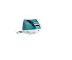
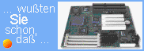

Solution Apple

Un OS Atari dessus ?
MagiC de ASH/ASF

Solution Milan

|
Laurent FAVARD |
| No update |
In this page are available
somes free programss with sources codes, in ZIP file format.
| AADS | 11/05/2000 | Version 1.263 | Programming GEM library |
| Asm6805 | 1995 | Version 1.40 | Motorola 6805 assembler |
| Cam | 05/05/1997 | Version 2.11 | Cross Assembler Motorola HC11/6805 (TTP) |
| Fun030 | 05/08/1998 | Version 1.60 | To drive Falcon sound matrix |
| GemSight | 27/08/1995 | Version 1.00 | To spy messages and events |
| Install | 30/12/1995 | Version 1.10 | Installer/Uninstaller |
| Joystick | 20/09/1998 | Version 1.00 | For Falcon enhanced joystick port |
| NVRAM Setup | 24/10/1995 | Version 1.00 | Set the Falcon and TT NVRAM |
Descriptions
- Librairy GEM AADS
- Yet another GEM programming Library and somes examples.
- Asm6805
- Motorola 6805 microcontrolleur Familly assembleur.
- CAM
- Motorola Cross-Assembleur which succed to Asm6805. It is able to assemble 6805 et HC11 code. Only
- in TTP version, because i don't enough of time to do a GEM interface..
- Fun30
- Small utility to setup the Falcon matrix sound
- GemSight
- Spy utility to look messages and events from another application. Work only with TOS and AES 4.
- Install
- Small applications installer and uninstaller .
- Joystick
- CThis program show how to use the enhanced Falcon Joystick interface, with a Paddle (analogic) or a
- Jaguar Joystick. Include a small description to build a simple paddle.
- NVRAM Setup
- Utility to setup the Falcons et TTs NVRAM.